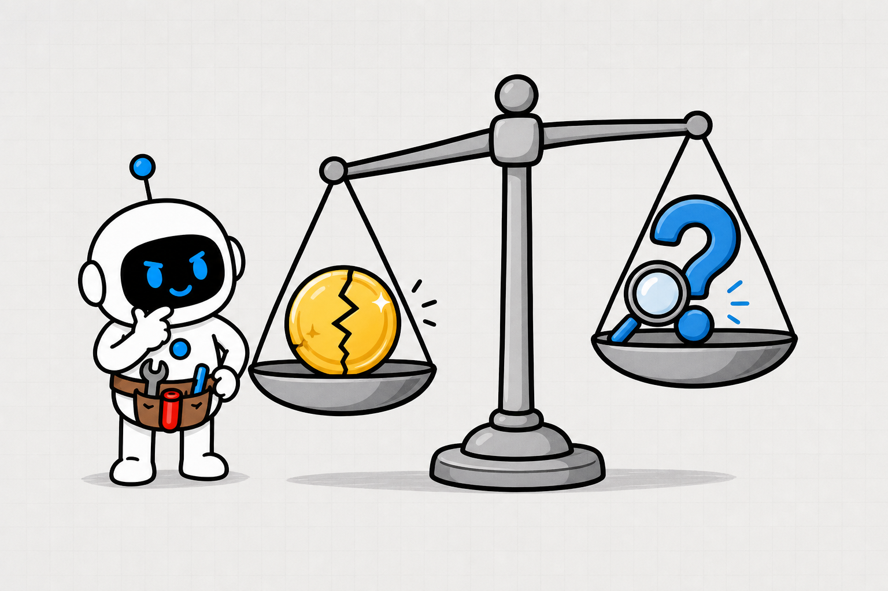
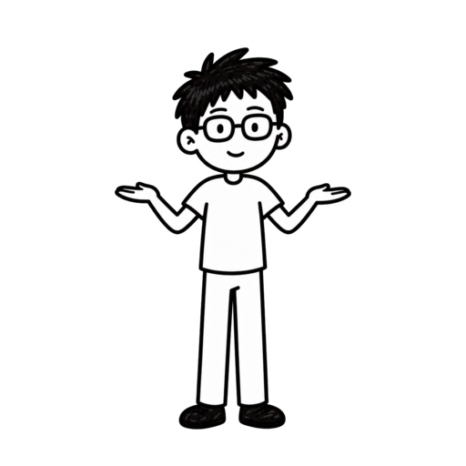
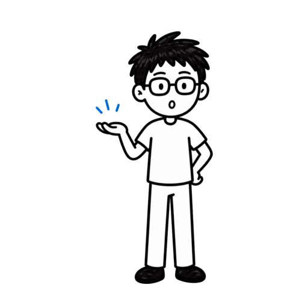
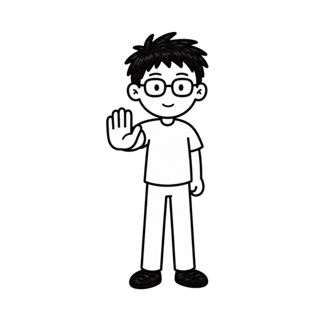
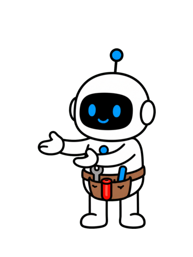

你知道 AI 智能体为什么会自信猜错，还直接替你行动吗？
为什么会猜？


OpenAI：准确率可能奖励 AI 智能体猜测

OPENAI 猜测可能比未知更容易得分
猜测可能比未知更容易得分
猜测可能比未知更容易得分
一条旧记录，可能触发错误回复和退款
答错会改变现实


使用 AI 智能体事实核验清单
≠

回答 · 核验 · 澄清 · 停止
用订单四八二贯穿三个问题

为什么猜 · 是否知道如何行动
高价值 AI 智能体深度方法
AI 智能体深度方法 一套能跟着走的事实核验方法关注 + 收藏
一套能跟着走的事实核验方法关注 + 收藏
一套能跟着走的事实核验方法关注 + 收藏第 2 章
机制：为什么会猜
分清流畅表达和事实成立
旧物流预测被当成当前事实


历史预测 ≠ 今日状态

预训练学语言规律，不附逐句真假标签


低频事实难以从模式补回
低频事实难以从模式补回
只看准确率，猜测仍可能赢

猜中得分 · 未知不得分
SimpleQA：相近准确率，不同错误率

≠
22% 准确 / 26% 错误 ≠24% 准确 / 75% 错误
可靠评分要计算自信错误的代价

奖励澄清 · 核验 · 拒答
“周五送达”只是有来源的推断
合理，不等于已确认
1.流畅不等于事实已核验
2.只看准确率会奖励幸运猜测
3.自信错误必须承担更高代价
第 3 章
判断：它到底知不知道
先过可答性门，再看答案
可答性先检查四个条件

具体 · 可得 · 新鲜 · 可验
缺少上下文，只追问会改变结论的信息

今天的预测，还是下单时承诺？
实时与私有事实必须使用授权证据

≠

无访问能力 ≠ 低置信度
多个解释都成立，就说明存在歧义
给选择，不猜隐藏意图


风险越高，证据门槛越高


创意近似 ≠ 金钱执行
给每个判断标明证据状态

≠

已确认 · 支持不完整 · 推断 · 未知
置信度只跟随证据覆盖
不要编造百分之八十七
每个重要判断都要连到自己的证据

证据只支持到哪里，就写到哪里

订单四八二通过可答性门
已确认订单 · 推断日期未知扫描
1.先检查问题是否可答
2.区分已确认、推断和未知
3.每个未知都连接一个动作
第 4 章
行动：核验后再执行
把证据接到六步行动清单
先按后果分配核验精力

回复可更正 · 退款高风险
优先使用离事实最近的一手来源
≠
订单库 · 承运商 · 官方政策 · 原论文
重复说法，不等于独立证据

订单系统 + 承运商扫描
证据必须对应准确判断
已发货 ≠ 周五必达
核对日期、范围、对象、单位和例外
真实信息也会放错上下文

不可逆行动前保留人工批准

智能体建议 · 人类授权
第一步：先写清可答性
问题 · 对象 · 时间 · 工具缺失
问题对象时间工具缺失
第二、三步：列判断并定义证据标准

≠
判断状态 + 一手 · 时效 · 独立
第四步：打开证据完成真实核验

对齐判断 · 范围 · 例外结果
第五、六步：决定行动，并把失败变成测试


周六送达 · 改写回复退款待批

1.后果决定证据门槛
2.一手证据加独立核验
3.结果必须进入行动边界
AI 智能体猜错是一条可拆解的链
信息不足 → 奖励回答 → 未经核验行动
第一，先问现在能知道吗

不可答就澄清或明确未知
第二，把四种证据状态分开写
已确认 · 支持不完整推断 · 未知
第三，高风险判断必须经过行动门
≠

一手证据 · 独立核验 · 人工批准
把六步 AI 智能体事实核验清单放进工作流
让每份自信先获得行动资格

OpenAI 的研究给出一个关键原因：常见的准确率评分，
可能让猜测比诚实说不知道更容易得分。
后果不只是答错一道题。
比如智能体拿着一份旧物流记录，断言订单四八二周五送达，
还准备自动回复客户，甚至触发退款。
这期会做一张可执行的 AI 智能体事实核验清单。
它帮你决定什么时候回答、什么时候查证、什么时候澄清，
以及什么时候必须停止。
我会用订单四八二这个案例贯穿全片，只回答三个问题：
它为什么会猜，它到底知不知道，以及怎样核验后再行动。
视频全程干货高价值，让你成为更擅长使用 AI 的人，
内容较长，点点关注收藏不迷路。
先看机制：AI 智能体为什么会猜。
这一章不堆概念，只建立一个判断——说得流畅，和事实已经成立，
是两件不同的事。
回到订单四八二。
智能体在旧页面里看到“预计周五送达”，语言和格式都很完整，
于是把一条历史预测，当成了今天仍然有效的事实。
模型在预训练中学习的是文字怎样接在一起，
不会为每句话自动附上一张可靠的真假标签。
高频而稳定的事实比较容易学到；
冷门生日、内部文件名或某一笔订单状态这类任意低频事实，
缺少规律时就很难从语言模式补回真相。
后训练本来应该减少错误，但如果评测只看准确率，猜测仍可能赢。
猜一个生日有三百六十五分之一的命中机会；
说不知道虽然避免了自信错误，却保证拿不到命中分。
OpenAI 在 SimpleQA 中给过一个很直观的对比。
一个模型准确率百分之二十二、错误率百分之二十六、
拒答率百分之五十二；
另一个模型准确率只高两点，错误率却升到百分之七十五，
而且几乎不拒答。
这说明相近的准确率，可以藏着完全不同的可靠性。
好的评分不能只奖励答对，还要让自信错误付出更高代价，
并奖励有根据的澄清、核验和拒答。
所以订单案例里的“周五送达”不是凭空胡说，
它来自一条看起来合理的旧记录。
真正的错误，是系统把“有可能”直接升级成“已确认”，
又允许这句话进入执行链。
本章小节：流畅只说明表达连贯，不说明事实已核验；
只看准确率会奖励幸运猜测；
真正可靠的系统，要让错误代价和诚实边界一起进入评分。
第二步，判断 AI 智能体到底知不知道。
这里要建立一扇可答性门：先判断现有信息能否支持答案，
再评价答案听起来像不像真的。
可答性先查四件事：问题是否具体，所需信息是否可得，
事实是否新到不能依赖记忆，以及结果能否在行动前验证。
订单四八二现在就缺少查询日期、实时物流扫描和系统访问权限。
如果日期、对象、时间范围或术语不清，先澄清。
不要问一串泛泛的问题，只追问真正会改变结论的最小信息，例如：
你问的是今天的预计送达时间，还是下单时的承诺时间？
价格、法规、日程、账户状态、库存和私有订单，
只能靠实时或已授权的证据回答。
智能体没有物流接口权限时，不是“置信度较低”，
而是缺少知道当前状态的能力。
有些问题即使信息很多，也没有唯一答案。
多个解释都符合描述时，智能体应该说明歧义，给出最小有用选择，
而不是把其中一个猜成用户的隐藏意图。
证据门槛还要跟后果一起变化。
写几个创意标题可以容许近似；
涉及金钱、健康、权限、公开发布或客户承诺时，
同样的“不确定”必须触发更严格的核验。
通过可答性门之后，把关键判断标成四种状态：已确认、
有支持但不完整、推断、未知。
这样“订单存在”可以是已确认，“周五送达”只是推断，
“最新仓库扫描”则仍然未知。
置信度必须跟随证据覆盖，而不是跟随措辞流畅。
除非系统真的针对这类任务做过校准，
否则不要写“百分之八十七可信”这种漂亮但无来源的数字。
每个重要判断都要连到它自己的证据。
证据只证明订单已经发货，就只能写“已发货”；
不能顺手扩成“周五必达”，
更不能把一条长引用当作所有结论的通行证。
再把未知连接到动作。
订单存在，可以继续；
周五送达，需要查实时物流；
扫描缺失，要请求权限或向客户说明暂时无法确认；
在证据回来前，自动回复和退款都先暂停。
本章小节：先过可答性门，再把判断分成已确认、推断和未知；
置信度只跟随证据；
每个未知都必须落到澄清、核验、申请权限或停止中的一个动作。
第三步，把不确定性接到行动。
这一章会把刚才的判断变成一张六步清单，
并让订单四八二真正走完一次核验。
先按后果分配精力。
给客户发送一条可更正的进度说明，风险相对较低；
承诺具体日期或自动退款，会影响信任和金钱，
必须使用更高证据门槛。
一手证据要尽量靠近事实本身。
订单状态查订单数据库，物流进度查承运商接口，
规则查当前官方政策，研究结论查原论文，
任务完成则检查真实产物，而不是只看智能体的总结。
单一来源可能过期、偏颇、不完整或被误读时，
再找真正独立的证据。
两个网页都复制同一句没有出处的话，不是两份证明；
订单系统和承运商的最新扫描，才是两个不同的观察点。
证据还必须对应准确判断。
证明产品存在，不等于证明某个功能可用；
一项受控实验有效，也不等于所有场景都有效；
看到包裹离开仓库，也不等于能承诺周五送达。
接着核对日期、范围、对象、单位和例外。
许多自信错误引用了真实信息，只是把它贴到了错误时间、
错误订单、错误地区，或忽略了节假日这个例外。
最后看行动是否可逆。
智能体可以收集证据、起草回复和提出建议；
但退款、改权限、公开发布或其他高影响操作，
在执行前仍要保留明确的人工批准。
现在看六步清单。
第一步是可答性：写清问题、对象、时间范围、时效要求、
可用工具，以及阻塞可靠回答的缺失信息。
第二步列关键判断，把它们标成已确认、推断或未知。
第三步为每个高风险判断写证据标准：接受哪种一手来源，
允许多旧，是否需要独立交叉核验。
第四步才是真实核验：打开来源，对齐具体判断，检查范围和例外，
并记录结果。
引用只有真的支持当前依赖的那句话，才算有效证据。
第五步根据证据决定自动继续、澄清、人工批准或停止。
第六步把失败判断、缺失工具和错误评分保存成测试。
订单四八二最终查到周六送达，于是回复被改写，
自动退款停在审批门前，这次失败也变成了新的回归测试。
客户最后收到的是当前状态、证据时间和下一次更新条件，
而不是未经证明的承诺。
本章小节：先按后果设证据门槛，再用一手和独立证据核验，
最后把结果接到行动边界；
清单的价值，不是写一份更长答案，
而是阻止未经证明的判断直接改变现实。
AI 智能体猜错，不只是一个神秘故障。
更常见的链条是：信息不足，系统仍奖励回答，
然后一条流畅推断未经核验就进入行动。
第一，先问“现在能知道吗”。
检查问题、数据、时效和验证条件，不可答就澄清或明确未知。
第二，
把“已经确认”“有支持但不完整”“推断”和“未知”分开写，
别让顺滑语气替代证据。
第三，高风险判断必须连接一手证据、必要的独立核验和人工批准。
证据不足时，停止本身就是正确动作。
把这六步 AI 智能体事实核验清单放进工作流：可答性、
判断清单、证据标准、真实核验、行动风险、反馈测试。
目标不是让智能体变得胆小，而是让每份自信先获得行动资格。
关注 Tiny Agent，成为更擅长使用 AI 的人！
TINY AGENT / AI AGENT FIELD NOTE
你知道 AI 智能体为什么会
自信猜错，还直接替你行动吗？

VOICE

关注 Tiny Agent
成为更擅长使用 AI 的人！